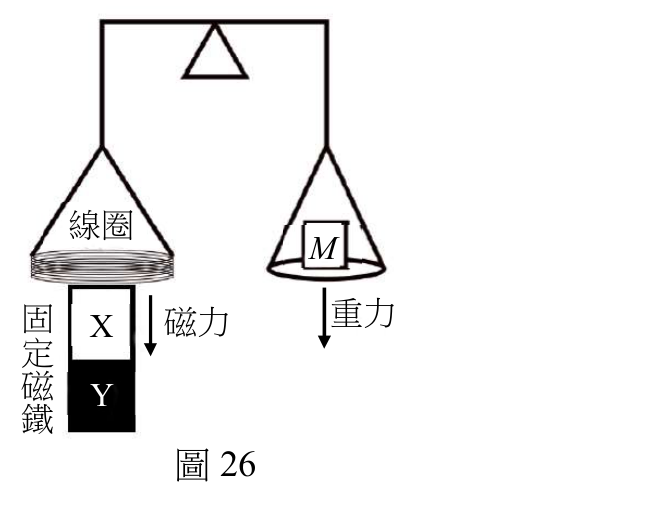
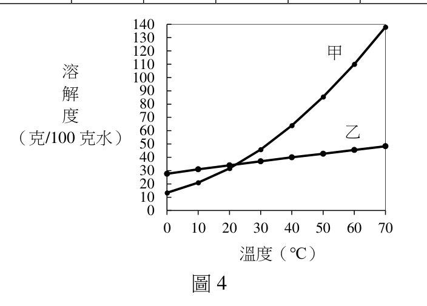
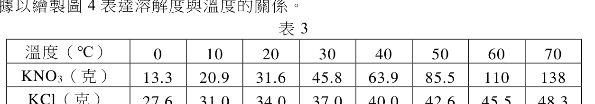
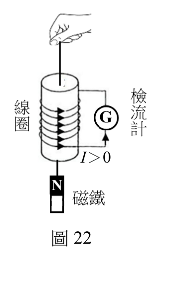

從實驗到論證：
科學數據處理、作圖與學測非選解析
在 108 課綱的大考自然科中，「數據處理與繪圖」已成為混合題與探究實作的必考核心能力。 本課程歷時 90 分鐘，帶領高二同學深入剖析 111 年電磁天平、112 年溶解度曲線、115 年潮位觀測 與 感應電流多象限分佈 等真實試題， 掌握「取得數據」、「記錄數據」到「分析作圖」的嚴謹科學思維！
單元導言：科學探究與數據的本質
科學探究的證據鏈 (CER)
- 主張：你的假設或結論（例如：感應電壓與速度成正比）。
- 證據：實驗所得客觀數據、測量數值與表格。
- 推理：透過作圖配適、斜率推算，連結物理化學定律。
大考中心為何年年考作圖？
- 考驗能否將冰冷表格轉換為直觀趨勢。
- 檢驗是否理解「實驗誤差」與「最佳配適線」。
- 從斜率或截距中萃取出未知的宏觀物理量（如質量、普朗克常數、反應速率常數）。
學測非選四大失分地雷
- 盲目連折線：把實驗散布點連成折線（應畫最佳配適直線）。
- 漏標坐標軸與單位：只有數字沒有物理意義。
- 只寫答案沒列算式：依評分原則未列式直接給 0 分！
- 有效位數失真：計算機除到底抄了 8 位小數。
如何取得數據：實驗設計、變因控制與感測
一、變因控制的三大鐵律
- 操縱變因（獨立變數 Independent Variable）：實驗者唯一主動改變的條件（例如改變線圈運動速度 v、水浴溫度 T）。
- 應變變因（相依變數 Dependent Variable）：隨著操縱變因改變而產生的反應測量值（例如感應電壓 V、溶質溶解度 S）。
- 控制變因（Control Variables）：必須嚴格維持恆定的所有其他條件（例如磁場強度、線圈匝數、大氣壓力）。若控制變因漂移，所有數據均屬無效！
二、現代數位感測與取樣技術
- 光電門與雷射測速：線圈以微幅動態振動時，利用數位光感測器以高取樣率擷取瞬間速度 v。
- 連續自動監測站：潮位儀採用超音波/壓力感測器，24 小時連續取樣，免除人為目視誤差。
- 高速錄影格放分析：肉眼無法看清瞬間電流時，透過 120fps 高速錄影，逐格對照檢流計指針與磁鐵空間座標 z。
大考真題對照：實驗變因與數據擷取完整試題剖析
請切換下方分頁選項，每一題自成一個獨立檢視分頁，放大研讀 100% 原始題幹並精準辨識變因設計：
「量子科學以光電科技改善了生活，也增進了質量國際標準的精密與穩定。科學家發現電壓、電阻與電磁波能量等電磁量的量子單元，與普朗克常數 h 相關，因此訂 h = 6.62607015 × 10⁻³⁴ J·s 為新的質量基準。工程師使用類似於圖 26 的電磁天平來校準質量，並利用經過量子單元校正的電磁量，來測量與換算線圈的電壓與電流，藉以連結質量 M 與普朗克常數 h。
某生利用積木製作一座類似於圖 26 等臂的電磁天平。圖中右側為秤盤，左側為線圈和磁鐵，X 與 Y 代表固定磁鐵的兩極。以支點為軸，線圈與秤盤可以是維持於水平的靜態模式，或上下微幅振動的動態模式。」
• 應變變因（反應測量）：感應電壓 V（由高靈敏度數位電壓表精準記錄讀數）。
• 控制變因（恆定條件）：磁鐵磁場強度 B、線圈匝數、等臂槓桿長度、環境氣壓與溫度。

「文強在不同溫度下測定 KNO₃ 和 KCl 對水的溶解度（克/100 克水），他將數據記錄於表 3，並據以繪製圖 4 表達溶解度與溫度的關係。
表 3 記錄 0℃、10℃、20℃、30℃、40℃、50℃、60℃、70℃ 時兩溶質的溶解度數值。文強欲探討如何利用溫度變化將兩固體混合物有效分離。」
• 應變變因（反應測量）：每 100g 水中所能容納之溶質最大溶解克數 S。
• 控制變因（恆定條件）：水溶劑質量（恆定 100.0 克）、大氣壓力（1 atm）、攪拌速率與固液平衡時間。


「某同學用手帶動磁鐵相對於線圈運動，以模擬潮汐驅動圖 21 發電設施中磁鐵相對於線圈的運動，如圖 22 所示，並將線圈串接檢流計 G。圖 22 中線圈與導線所標示的箭號，亦即電流由下往上流經檢流計的方向，取為正；並取線圈中點為位置 z 的原點，且 z 向上為正。
該同學今將磁鐵從線圈下方，自靜止加速上提使磁鐵速度越來越快地穿過線圈。然後從錄影分析磁鐵位置 z 與感應電流 I，表 10 僅列出磁鐵在線圈外部的測量結果。」
• 應變變因（反應測量）：檢流計感應電流大小與方向 I（含方向性正負號）。
• 控制變因（恆定條件）：線圈匝數、檢流計內阻規格、磁鐵磁極朝向（N 極向上）、上提運動之加速度規律。

系統誤差 vs 隨機誤差：辨析、實例與大考消除對策
【核心本質】：實驗測量值向單一特定方向固定偏離真值的規律性誤差。只要實驗條件或儀器未校正，重複測量 1,000 次也無法透過取平均值消除！
- 儀器零點漂移：三用電表指針未調零即開始測量；電子天平未扣除秤量紙重。
- 觀測基準面固定落差：大考 115 年學測潮位試題中，港口潮位計因安裝高程與海圖基準面不同，原始讀數全體偏高。
- 試劑純度或標準件老化：標準砝碼生鏽增加質量；滴定管刻度因熱膨脹產生整體偏差。
如 115 年學測潮位試卷所示：「記錄之水位減掉全日水位平均值」，將整個數據序列統一減去背景基準，徹底平移歸零！
• 數據表格記錄規範：
數據表格中應開闢「原始讀數」與「校正後淨值」雙欄，並在表格下方清楚附註：
校正值 = 測量值 - 儀器零點偏差 (+0.25)。
【核心本質】：由無法人為完全掌控的微觀起伏與估計限制引起，數值在真值兩側呈對稱隨機波動（有時偏大、有時偏小）。可透過多次重複測量與統計方法有效減小！
- 人為讀數估計抖動：最小刻度以下的一位估計值，因視線角度或注意力起伏而產生 ±0.1 刻度抖動。
- 環境雜訊與熱擾動：111 年學測電磁天平動態震盪時，微幅氣流擾動與導線接觸熱電位造成感應電壓微幅跳動。
- 數位感測器取樣量化雜訊：光電門計時器在微秒級的取樣量化起伏。
在作圖時，嚴禁用折線硬連所有點！必須繪製平滑穿過散布點群中央的最佳直線，使上下兩側偏差互相抵消，萃取出真實物理斜率。
• 數據表格記錄規範：
每個測量點至少獨立重複測量 3 次（$N \ge 3$），表格中呈現
第1次、第2次、第3次、平均值，並標記不確定度或有效數字（如 $15.20 \pm 0.05\text{ mm}$）。
有效數字與單位檢查器 (SigFig Validator)
互動工具：有效數字與單位檢查器 (SigFig Validator)
試著在下方輸入測量數據（例如 0.040、-3.80、25.0、138.0），系統將為你即時分析有效位數與科學記號：
如何分析處理數據：科學作圖工作台 (Chart Studio)
111 年學測第 58~60 題：電磁天平動態校準與質量測量
利用線圈相對於磁鐵運動的速度 v 與感應電壓 V 的線性關係，求出比例常數 fB（斜率），再結合靜態平衡電流 I 求出待測物質量 M。
| 速度 v (mm/s) | 電壓 V (mV) | 備註 |
|---|
實例深度剖析：實驗類型、數據處理與作圖呈現全攻略
【111 年學測自然考科 第 58~60 題】電磁天平動態校準與質量測量
量子科學以光電科技改善了生活，也增進了質量國際標準的精密與穩定。科學家發現電壓、電阻與電磁波能量等電磁量的量子單元，與普朗克常數 h 相關，因此訂 h = 6.62607015 × 10⁻³⁴ J·s 為新的質量基準。工程師使用類似於圖 26 的電磁天平來校準質量，並利用經過量子單元校正的電磁量，來測量與換算線圈的電壓與電流，藉以連結質量 M 與普朗克常數 h。
某生利用積木製作一座類似於圖 26 等臂的電磁天平。圖中右側為秤盤，左側為線圈和磁鐵，X 與 Y 代表固定磁鐵的兩極。以支點為軸，線圈與秤盤可以是維持於水平的靜態模式，或上下微幅振動的動態模式。
靜態模式時，線圈電流 I 與磁鐵之間的作用力量值為 FB = fB · I。由於缺乏檢測 fB 的設備，無法從靜態模式求得待測物的質量 M。但可知，當線圈相對於磁鐵移動的速度為 v 時，線圈的感應電動勢（電壓）為 V = fB · v，動態模式與靜態模式的 fB 相同。分析線圈速度 v，以及對應的電壓表讀數 V，其數據如表 5，並繪製感應電壓對線圈速度（V-v）的關係圖，藉以推算 fB 值。當天平達靜態平衡時，線圈電流為 I = 40 mA，試以 kg 為單位，計算待測物的質量，須寫出計算步驟，並四捨五入至小數第 1 位。（已知重力加速度量值 g = 9.8 m/s²）
| 線圈速度 v (mm/s) | -3.8 | -2.2 | 0.1 | 1.8 | 3.6 |
|---|---|---|---|---|---|
| 感應電壓 V (mV) | -95 | -55 | 2.5 | 45 | 90 |
• 單位換算技巧：(mV) / (mm/s) = (10⁻³ V) / (10⁻³ m/s) = 1 V·s/m，單位自動抵消，方便推算 SI 制。
• 斜率計算與物理量轉換：fB = ΔV / Δv = [90 - (-95)] / [3.6 - (-3.8)] = 25.0 V·s/m。代入 M = (fB · I) / g = (25.0 × 0.040) / 9.8 ≈ 0.1 kg。
• 為何嚴禁折線？：實驗測量值必存在隨機誤差，若將各點逐一連線成鋸齒狀折線，會放大隨機誤差；只有畫出穿過各點分佈中央的最佳配適直線，才能客觀代表整體物理規律。
• 標記 5 個精確散布點
• 用直尺繪製最佳直線穿過點群
• 自變數 v 橫軸、應變數 V 縱軸
• 鋸齒折線連接各點（扣大分）
• 只取頭尾兩點拉線忽略中點
• 換算質量漏列步驟直接寫答案
【112 年學測自然考科 第 20 題】硝酸鉀與氯化鉀溶解度曲線與再結晶分離
文強在不同溫度下測定 KNO₃ 和 KCl 對水的溶解度（克/100 克水），他將數據記錄於表 3，並據以繪製圖 4 表達溶解度與溫度的關係。
下列關於此實驗的結論及其後續實驗的敘述，何者正確？
(A) 圖 4 的曲線甲為 KCl 的溶解度與溫度的關係
(B) 由圖 4 得知 KNO₃ 和 KCl 在某一溫度時具有相同的溶解度 x，且 36.0 < x < 37.0
(C) 10℃ 時，131 克飽和 KCl 溶液加熱蒸發 10 克水後，再降溫到 10℃，充分攪拌該溶液待其達平衡後，則此時溶液的重量百分濃度為 25%
(D) 20℃ 時，將裝有 5 毫升飽和 KNO₃ 溶液的試管，置於裝有 100 毫升水的燒杯中，並於燒杯中加入 10 克 KNO₃ 固體，充分攪拌待其溶解後，則可見到試管中有結晶析出
(E) 已知一混合物中含有等重量的 KNO₃ 和 KCl，文強根據他的實驗結果，可利用加熱蒸發濃縮、冷卻結晶、過濾的方法將兩者分離
| 溫度 (℃) | 0 | 10 | 20 | 30 | 40 | 50 | 60 | 70 |
|---|---|---|---|---|---|---|---|---|
| KNO3 (g/100g水) | 13.3 | 20.9 | 31.6 | 45.8 | 63.9 | 85.5 | 110 | 138 |
| KCl (g/100g水) | 27.6 | 31.0 | 34.0 | 37.0 | 40.0 | 42.6 | 45.5 | 48.3 |
• 溫差析出量計算：KNO₃ 從 70℃ 降至 10℃ 可析出晶體 138 - 20.9 = 117.1 克，而 KCl 僅微量析出 48.3 - 31.0 = 17.3 克。
• 交點內插法：在 24~25℃ 附近兩者曲線相交，等溶解度值 36.0 < x < 37.0 g（驗證選項 B 正確）。
• 呈現理由：自變數溫度是連續物理量，物理化學熱力學關係為平滑連續曲線。並列兩組曲線能鮮明對比 KNO₃ 的「斜率急遽攀升」與 KCl 的「平緩微升」，提供結晶純化策略的決定性依據。
• 必須包含明確圖例 (Legend)
• 兩系列使用不同顏色與節點形狀
• 曲線平滑圓弧轉折，內插交點
• 未標明哪條線是 KNO3 哪條是 KCl
• 用直線硬接產生尖銳折角
• 縱坐標刻度不均勻縮放
【115 年學測自然考科 第 50~52 題】港口觀測站逐時相對潮位與潮差計算
潮汐對生活有許多影響，例如船舶進出港、水下工程施工、海釣遊憩活動等。為瞭解海岸潮汐型態及預報潮位高低，某港口碼頭邊設置了一個潮汐觀測站。根據潮位儀記錄的水位，減掉水位記錄平均值之後，可得到某星期一中午 12 時至次日 1 時的逐時相對潮汐水位記錄如表 9。
潮汐為永續能源。例如圖 20 所示，可在海灣口築堤壩以蓄水儲能於海灣內。漲潮時海水流入海灣，退潮時海水流出海灣，都經過壩底通道，可驅動水車發電機進行發電，假設漲、退潮發電量相同。圖 21 為另一種發電設施，潮汐造成海面升降，經由浮筒與連桿，推拉磁鐵相對於線圈運動，因而產生感應電流。
請在坐標格線中，標示表 9 中 13、15、17、19、21、23 時及次日 1 時的相對潮位高度，並將各點連線（2 分），由此觀測資料可推知此處的潮差是多少公尺（須列出計算過程）？（2 分）（於答題卷作答）
| 時 | 13 | 15 (乾潮) | 17 | 19 | 21 (滿潮) | 23 | 次日1 |
|---|---|---|---|---|---|---|---|
| 潮位(m) | -0.75 | -1.50 | -1.00 | 0.25 | 1.75 | 1.00 | -0.25 |
• 極值判讀：滿潮極大值出現在 21 時（+1.75 公尺），乾潮極小值出現在 15 時（-1.50 公尺）。
• 潮差運算：潮差 Δh = 1.75 - (-1.50) = 3.25 公尺。
• 為何此處必須連線？：時間具有連續單向流動特性，連續連線能夠重現漲潮與退潮的週期運動趨勢，直觀凸顯極大值與極小值發生時機。
• 7 個指定時間點坐標準確無誤
• 點與點之間務必平順連線（占1分）
• 潮差計算務必寫出 1.75 - (-1.5)
• 只有點而沒有連線（依規準扣1分）
• 負負得正算錯成 1.75 - 1.5 = 0.25
• 算式留白直接寫答案（計算0分）
【115 年學測自然考科 第 53 題】磁鐵加速運動之感應電流多象限分佈
某同學用手帶動磁鐵相對於線圈運動，以模擬潮汐驅動圖 21 發電設施中磁鐵相對於線圈的運動，如圖 22 所示，並將線圈串接檢流計 G。圖 22 中線圈與導線所標示的箭號，亦即電流由下往上流經檢流計的方向，取為正；並取線圈中點為位置 z 的原點，且 z 向上為正。
該同學今將磁鐵從線圈下方，自靜止加速上提使磁鐵速度越來越快地穿過線圈。然後從錄影分析磁鐵位置 z 與感應電流 I，表 10 僅列出磁鐵在線圈外部的測量結果。
（a）當 z < 0 時，說明研判感應電流 I 方向為正或負的理由。（1 分）
（b）考量感應電流量值較大的一列數據，說明研判其屬於 z < 0 或 z > 0 的理由。（1 分）
（c）在答題卷對應之方格紙的坐標系中，描繪表 10 中所有數據點（共有 8 個點）。（2 分）
| 位置量值 z (cm) | 5 | 10 | 15 | 20 |
|---|---|---|---|---|
| 進入端電流量值 I (mA) | 3.40 | 2.10 | 0.95 | 0.43 |
| 穿出端電流量值 I (mA) | 4.30 | 2.70 | 1.20 | 0.54 |
• 非對稱性物理推理：磁鐵加速運動，z = +5 cm 處速度大於 z = -5 cm 處，磁通量變化率更大，故量值較大的一列（4.30 mA）必屬於穿出端的第 1 象限！
• 呈現理由：空間座標與向量電流皆有嚴格的方向性（正負號）。以十字交叉原點繪製第 1 與第 3 象限，能立刻凸顯物理量的「方向倒轉」與「加速度打破對稱性」。
• 8 個點必須全數標出於 1、3 象限
• 第 1 象限點位高度顯著高於第 3 象限
• 原點十字軸明確標示 (0,0)
• 忽略正負號全部畫在第 1 象限
• 點位數量漏標（少於 8 點）
• 大小顛倒將較大值誤畫在第 3 象限
理工跨領域實驗數據專題實戰
為讓同學跳脫大考考古題框架，我們針對物理、化學分析、物理化學、定量滴定及分子生物等核心理工學科，原創設計了 5 大不同數據類型與處理難題。各題包含完整實驗情境、相關公式與原始數據，並提供課堂作圖檢驗與詳細解析，亦附帶可下載之原始 CSV 檔案供課堂實作練習！